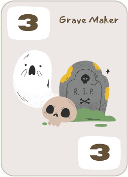
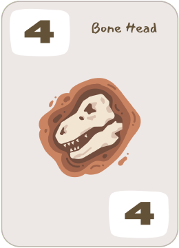
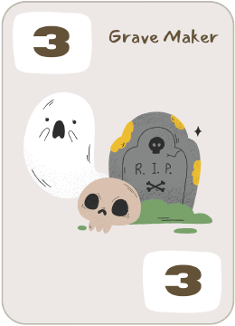
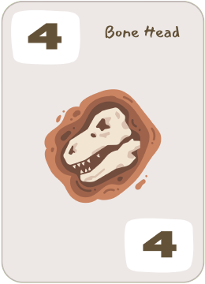
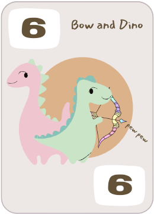
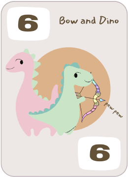

Be the first Dinosaur to escape danger by reaching 50 points while avoiding Natural, Predatory, and Emotional disasters. Good Luck!
Players will start with a Dinosaur board and a corresponding Dinosaur meeple. The players' boards includes an escape route, disaster area and the dinosaur's traits. Players will draw 5 cards from the main deck to keep in their inventory.
To play cards, players must choose a Point card from their inventory and click it to place it in the center. Players may also play an Instant card, if they have one, though it is not mandatory. If players does not have any Point cards in their hand during this part of the round, then the player's cards will be discarded from their inventory and they will be requested to draw 5 new cards. The process will repeat until the player has a Point card in their inventory.
Once the players have placed a point card in the center, press the play button to reveal opponent's cards.
In each round, scoring occurs after all center cards are revealed. Each player collects points equal to their score and their Dinosaur meeple is moved along the Escape Route on their player board accordingly.
The player with the lowest score collects the face-up Disaster card to their Disaster Area.
Before the next round begins, the center will clear automatically as the center cards are discarded. If at any time the Main deck has no remaining cards, the discard pile will be shuffled and form a new Main Deck.
There are three main types of Disaster cards. Each type of Disaster card is differentiated by a color and a symbol.
If a player collects either four Disaster cards of the same type or two pairs of the three types of Disaster cards in their Disaster area, the player is loses the game.
Each Dinosaur player board has the Dinosaur's traits listed in the bottom left corner. These traits will give players an advantage and a disadvantage, adding or subtracting from their point score value each round.
Point cards feature various weapons, trinkets, and good luck charms that players will use to try to collect points and avoid disasters. Each has a point value between 1 and 6 that is used for scoring during the round.

 



 

Instant cards can be used to tip the odds in a player’s favor or save their Dinosaur in a pinch. Each Instant card has a specific advantage.
If a tie occurs, each player will not move on their escape route and the game goes on.
If a player fills up their disaster slots without dying, they can move up 5 spaces on their Escape Route and their disaster board resets.